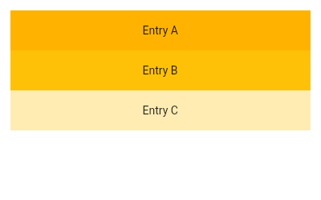
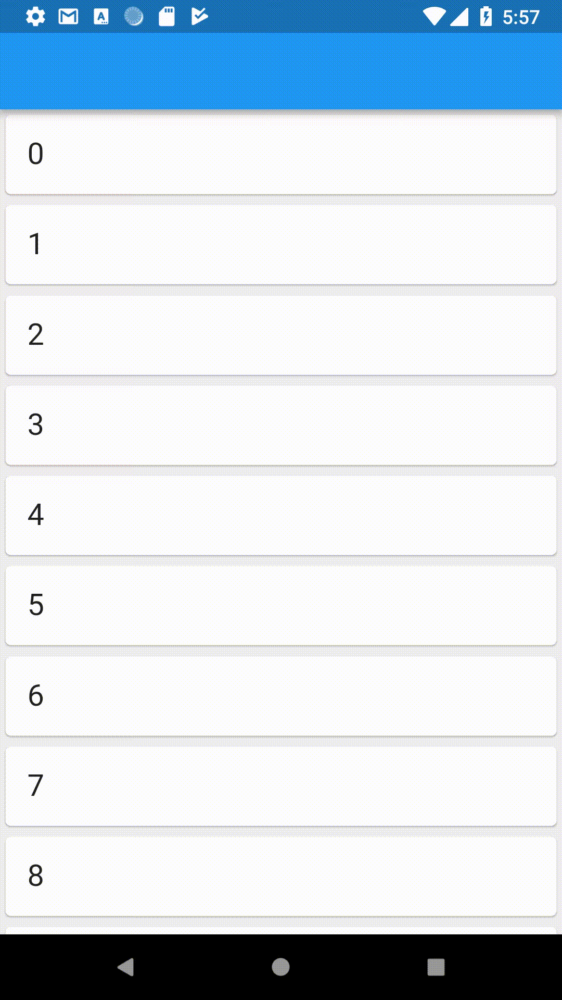
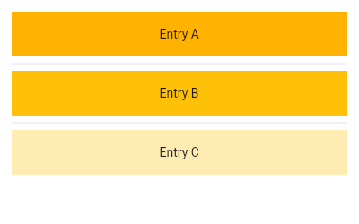
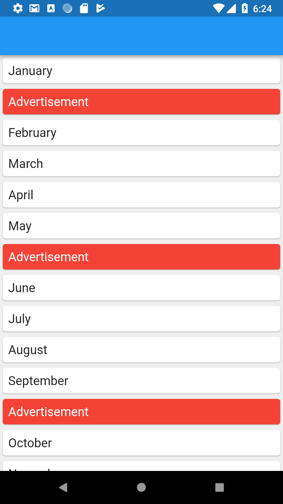

ListView Widget
A scrollable list of widgets arranged linearly. It displays its children one after another in the scroll direction. In the cross axis, the children are required to fill the ListView.
Static ListView
If you have a short list of items that don't change, then you can use the default ListView constructor to make it. This is useful for making something like a settings menu page.
ListView(
padding: const EdgeInsets.all(8),
children: <Widget>[
Container(
height: 50,
color: Colors.amber[600],
child: const Center(child: Text('Entry A')),
),
Container(
height: 50,
color: Colors.amber[500],
child: const Center(child: Text('Entry B')),
),
Container(
height: 50,
color: Colors.amber[100],
child: const Center(child: Text('Entry C')),
),
],
)
The above code would produce the following output:
ListView.builder()
The builder() constructor constructs a repeating list of items. The constructor takes two main parameters: An itemCount for the number of items in the list and an itemBuilder for constructed each list item.
final List<String> entries = <String>['A', 'B', 'C'];
final List<int> colorCodes = <int>[600, 500, 100];
ListView.builder(
padding: const EdgeInsets.all(8),
itemCount: entries.length,
itemBuilder: (BuildContext context, int index) {
return Container(
height: 50,
color: Colors.amber[colorCodes[index]],
child: Center(child: Text('Entry ${entries[index]}')),
);
}
);

The general format of the code is:
ListView.builder(
itemCount: itemCount,
itemBuilder: (context, position) {
return listItem();
},
),
The list items are constructed lazily, meaning only a specific number of list items are constructed and when a user scrolls ahead, the earlier ones are destroyed.
The itemCount parameter specifies the total number of item in the list and itemBuilder parameter should return the widget which will be displayed as the list item. The method that is assigned to itemBuilder parameter gets two argument context and position. The position specifies the position or index of the each item in the list.
Infinite List
The argument itemCount is optional. Without this parameter the list is infinite. In the following example, the scrolling never ends.
ListView.builder(
itemBuilder: (context, position) {
return Card(
child: Padding(
padding: const EdgeInsets.all(16.0),
child: Text(position.toString(), style: TextStyle(fontSize: 22.0),),
),
);
},
),

ListView.separated()
The ListView.separated constructor takes two IndexedWidgetBuilders: itemBuilder builds child items on demand, and separatorBuilder similarly builds separator children which appear in between the child items. This constructor is appropriate for list views with a fixed number of children.
Note that the infinite count discussed in the earlier constructor cannot be used here and this constructor enforces an itemCount.
final List<String> entries = <String>['A', 'B', 'C'];
final List<int> colorCodes = <int>[600, 500, 100];
ListView.separated(
padding: const EdgeInsets.all(8),
itemCount: entries.length,
itemBuilder: (BuildContext context, int index) {
return Container(
height: 50,
color: Colors.amber[colorCodes[index]],
child: Center(child: Text('Entry ${entries[index]}')),
);
},
separatorBuilder: (BuildContext context, int index) => const Divider(),
);

This type of list lets you dynamically define separators, have different types of separators for different types of items, add or remove separators when needed, etc.
This implementation can also be used for inserting other types of elements (advertisements for example) easily and without any modification to the main list in the middle of the list items.
Note: The separator list length is 1 less than the item list as a separator does not exist after the last element.
Exploring ScrollPhysics
To control the way scrolling takes place, we set the physics parameter in the ListView constructor. The different types of physics are:
NeverScrollableScrollPhysics
NeverScrollableScrollPhysics renders the list non-scrollable. Use this to disable scrolling of the ListView completely.
BouncingScrollPhysics
BouncingScrollPhysics bounces back the list when the list ends. A similar effect is used on iOS.
ClampingScrollPhysics
This is the default scrolling physics used on Android. The list stops at the end and gives an effect indicating it.
FixedExtentScrollPhysics
This is slightly different than the other ones in this list in the sense that it only works with FixedExtendScrollControllers and lists that use them. For an example we will take a ListWheelScrollView wich makes a wheel-like list.
FixedExtentScrollPhysics only scrolls to items instead of any offset in between.
FixedExtentScrollController fixedExtentScrollController = new FixedExtentScrollController();
ListWheelScrollView(
controller: fixedExtentScrollController,
physics: FixedExtentScrollPhysics(),
children: monthsOfTheYear.map((month) {
return Card(
child: Row(
children: <Widget>[
Expanded(
child: Padding(
padding: const EdgeInsets.all(8.0),
child: Text(
month,
style: TextStyle(fontSize: 18.0),
),
)),
],
));
}).toList(),
itemExtent: 60.0,
),